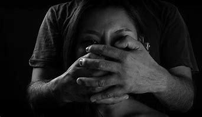
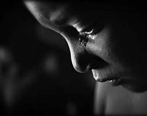

Types of Child Abuse
Physical abuse
A nonaccidental physical injury to a child caused by a parent, caregiver, or other person responsible for a child and can include punching, beating, kicking, biting, shaking, throwing, stabbing, choking, hitting (with a hand, stick, strap, or other object), burning, or otherwise causing physical harm

Sexual abuse
Sexual abuse, defined by CAPTA as “the employment, use, persuasion, inducement, enticement, or coercion of any child to engage in, or assist any other person to engage in, any sexually explicit conduct or simulation of such conduct to produce a visual depiction of such conduct; or the rape, and in cases of caretaker or interfamilial relationships, statutory rape, molestation, prostitution, or other form of sexual exploitation of children, or incest with children. It includes activities by a parent or other caregiver such as fondling a child’s genitals, penetration, incest, rape, sodomy, indecent exposure, and exploitation through prostitution or the production of pornographic materials. Sexual abuse is a grave violation of a child’s safety, trust, and dignity

Emotional abuse (or psychological abuse)
Is a pattern of behavior that impairs a child’s emotional development or sense of self-worth. This may include constant criticism, threats, or rejection and withholding love, support, or guidance.

Signs Of Child Abuse
Recognizing the high-risk situations and warning signs of maltreatment is critical to breaking this cycle of abuse. If you suspect a child is being harmed, don’t stay silent—your voice could be their lifeline. Reporting your concerns isn’t an accusation; it’s a bold step toward protecting a child and helping their family access the support they need. Any one of us can make a difference. Your vigilance and courage could save a life, whether you’re a neighbor, teacher, friend, or stranger. Reporting your suspicions triggers an investigation, opening the door to protection and resources for the child and their family.
Signs of Physical abuse
A child who exhibits the following signs may be a victim of physical abuse:
- Has unexplained injuries, such as burns, bites, bruises, broken bones, or black eyes
- Has fading bruises or other noticeable marks after an absence from school
- Seems scared, anxious, depressed, withdrawn, or aggressive
- Shrinks at the approach of adults
- Abuses animals or pets
Signs of Sexual abuse
A child who exhibits the following signs may be a victim of sexual abuse:
- Has difficulty walking or sitting
- Attaches very quickly to strangers or new adults in their environmen
- Suddenly refuses to go to school
- Reports nightmares or bedwetting
- Experiences a sudden change in appetite
Signs of Emotional abuse
A child who exhibits the following signs may be a victim of emotional maltreatment:
- Shows extremes in behavior, such as being overly compliant or demanding, extremely passive, or aggressive
- Is either inappropriately adult (e.g., parenting other children) or inappropriately infantile (e.g., frequently rocking or head-banging
- Shows signs of depression or suicidal thoughts.
- Reports an inability to develop emotional bonds with others